Strategic Sandbox, czyli w jaki sposób AI zmienia mój warsztat i sposób myślenia o strategii…
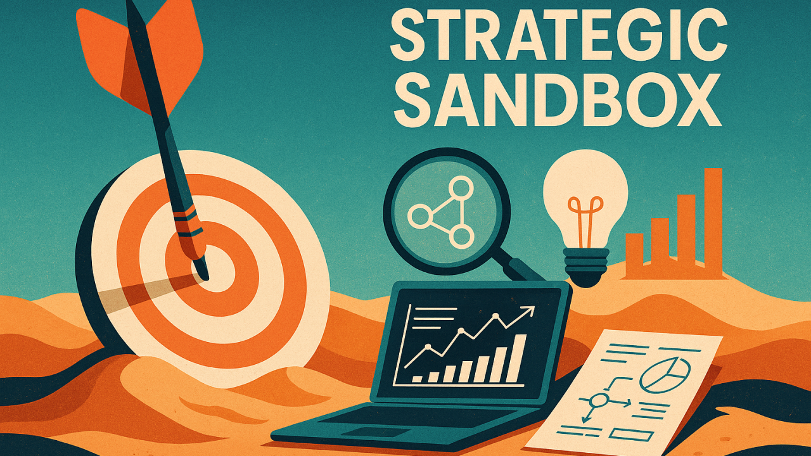
„Mapa to nie terytorium”
A. Korzybski
[opisane poniżej narzędzie można przetestować w tym miejscu]
Kształtowanie strategii to proces, który łączy zarówno analizę i poszukiwanie logicznych związków przyczynowo-skutkowych, jak i pewną grę wyobraźni - tworzenie wielu możliwych scenariuszy działań oraz mentalne testowanie różnych hipotez w celu sformułowania optymalnej ścieżki realizacji celu.
Jest to więc proces z jednej strony mocno racjonalny, oparty na researchu, analizie danych, czy formułowaniu wniosków, z drugiej zaś intuicyjno-kreatywny, w którym pojawia się wiele myślowych eksperymentów na zasadzie „a co by się stało gdyby…?”. Eksperymenty te prowadzone są jednak najczęściej wyłącznie w umyśle osób formułujących strategię ponieważ np. jednoczesne, realne przetestowanie wielu różnych scenariuszy kampanii opartych na odmiennych założeniach z przyczyn oczywistych w grę raczej nie wchodzi.
Możliwe są oczywiście eksperymenty w skali mikro - związane z prowadzeniem wąskich działań taktycznych, podobnie jak np. testy AB wariantów różnych reklam w różnych kanałach dotarcia itp. W dużekj mierze przydatne jest również odnoszenie się do danych historycznych, przykładów i udokumentowanych benchmarków. Pozwalają one budować przypuszczenia w rodzaju: „skoro w danej kategorii, taka kombinacja działań okazała się skuteczna / nieskuteczna, to jest wysoce prawdopodobne, że naszej kategorii i podobnym kontekście działania podobne / identyczne przyniosą zbliżony rezultat...”.
Analogie tego rodzaju są na pewno inspirujące, ale wciąż pozostają wyłącznie ograniczoną analogią ponieważ nigdy w 100% nie pokrywają się z aktualną mapą rzeczywistości i kontekstem, w jakim działa dana marka. Liczba dynamicznych zmiennych oraz niepewności, która wiąże się z tworzeniem indywidualnej strategii jest praktycznie nieskończona, więc nie istnieje tym samym żaden skończony - dający się racjonalnie opisać algorytm czy przepis pozwalający na konstruowanie skutecznych strategii. Zawsze też pewne generalizacje, heurystyki, intuicja i „przeczucia” (podobnie jak przypadek) będę tu odgrywać rolę równie istotna jak twarde kalkulacje, szacunki i szczegółowe analizy.
Stąd również warsztat pracy strategów wygląda zwykle tak, jak wygląda – czyli trudno w zasadzie powiedzieć jak wygląda, ponieważ nie ma tu absolutnie żadnych wystandaryzowanych metod, narzędzi czy procesów albo powszechnie obowiązujących reguł.
Istnieją co prawda narzędzia uniwersalne – ogólnego przeznaczenia, które pozwalają na domenową komunikację oferując pewien wspólny język (zarządzanie, marketing, strategia) , dzięki któremu możliwa jest racjonalna komunikacja.
Analiza SWOT, model BMC, wszelkie formuły pozycjonujące, modele Aakera czy wszelakie macierze w rodzaju BCG, Ansoffa , typologie archetypów, mapy percepcji, łańcuchy wartości, piramidy potrzeb, schematy STP itd. itp. – wszystko to i wiele innych to na pewno niezwykle użyteczne narzędzia pozwalające uważnie obejrzeć i opisać jakiś wyselekcjonowany fragment rzeczywistości. Nie istnieje jednak jakiś wspólny konsensus porządkujący kolejność czy sposób korzystania z takich narzędzi, a każdy strateg tworzy swój własny, unikalny warsztat, który jest wypadkową jego doświadczenia, wiedzy, stylu myślenia czy wręcz osobowości.
W przypadku firm zajmujących się strategią tworzą się też z biegiem czasu odrębne style czy też „szkoły” strategicznego myślenia, podobnie jak w przypadku największych koncernów czy agencji reklamowych. Diametralne różnice w podejściu i rozumieniu tego jak „prawidłowo” należy formułować strategię widoczne są zaś przy okazji odwiecznych dyskusji np. na temat tego czym właściwe jest „consumer insight”, co jest a co nie jest „big idea” lub gdzie właściwie kończy się strategia, a zaczyna kreacja.
Jednej i spójnej odpowiedzi wciąż jednak brak, bo sama strategia nie jest formalną teorią ale po prostu jakimś sposobem myślenia o tym, co i z jakim skutkiem najprawdopodobniej zadziała w określonym kontekście.
Stąd też warsztat stratega to nie tyle zestaw „sprawdzonych narzędzi” , co pewien mentalny ekosystem – najczęściej eklektyczny zlepek lektur (czasem zupełnie przypadkowych), case studies, dostępnych danych, własnych doświadczeń, refleksji oraz intuicji.
Różnorodność taka choć na pewno twórcza, bywa też źródłem chaosu. Wielu bowiem strategów buduje własny język, własne skróty myślowe, własne formaty i schematy, przez co np. komunikacja i współpraca pomiędzy różnymi zespołami bywa czasem trudna lub wręcz niemożliwa.
Największym (a zarazem najciekawszym) wyzwaniem i jednocześnie problematycznym aspektem pracy strategicznej jest chyba próba przewidywania tego, co może się wydarzyć na skutek różnych „ruchów strategicznych” czy też „manewrów”. W jaki sposób zareaguje np. grupa docelowa? Co wówczas zrobić może konkurencja? A jeśli zrobi właśnie to, to co pomyśleć mogą i jak zachowają się odbiorcy? itd.
Próba odpowiedzi na tego rodzaju pytania przypomina w pewnej mierze próbę przewidzenia ruchów przeciwnika w trakcie gry w szachy czy chińskie Go. Przestawienie bierki na planszy czy też dołożenie kolejnego kamienia poprzedzone jest zwykle grą w wyobraźni – próba zajrzenia za horyzont przyszłości jak najdalej i budowania prognoz na temat odległych, alternatywnych stanów rzeczy na podstawie sytuacji aktualnej – tego, co tu i teraz.
Szachownica czy plansza Go to jednak wciąż gry o sumie zerowej i toczona z tylko jednym przeciwnikiem. Jak jednak próbować przewidywać jednocześnie ruchy wielu „graczy” czy też „aktorów” – różne segmenty klientów, wielość konkurentów, dostawcy, różne agendy i podmiot zewnętrzne? Czy jest to w ogóle racjonalnie możliwe i wykonalne?
Oczywiście nie jest. Liczba elementów i ich możliwych kombinacji w kolejnych iteracjach jest tu zbyt duża by próbować sensownie odtwarzać np. wszystkie możliwe drzewa decyzyjne we wszelkich możliwych kombinacjach – nawet w krótkich odcinkach czasowych. Jedynym sposobem pozostaje więc redukcja tej złożonej wielowymiarowości i przełożenie jej na dwuwymiarową mapę, swoista kompresja informacji i tworzenie znacznie prostszych modeli, które umożliwiają operowanie i manipulowanie nimi w wyobraźni – tudzież na kartce papieru.
I tak właśnie wygląda najczęściej mój własny warsztat, kiedy zabieram się za kształtowanie jakiejś strategii – zagryzmolone i podkreślone boardy, kolorowe stickery z notatkami na podłodze lub na ścianach, rozklejone wokół zdjęcia produktów, person, odręczne rysunki i karteczki z hipotezami – taka robocza mapa rzeczywistości, w której próbuję odnaleźć jakiś sens i manipulować wybranymi obiektami zastanawiając się „a co by było gdyby...”
Jak jednak słusznie kiedyś zauważył filozof Alfred Korzybski: „Mapa to nie terytorium"; każda więc najlepsza na pozór abstrakcja rzeczywistości nigdy nie będzie tożsama z samą rzeczywistością. Tworząc mapę czy modele rzeczywistości rynkowej strateg musi więc pamiętać, że wciąż są to wyłącznie ułomne i mocno ograniczone reprezentacje przebogatych i wciąż zmiennych realiów.
W tym sensie sama strategia okazuje się w zasadzie pewną sztuką operowania uproszczeniami i umiejętnością tworzenia użytecznych modeli rzeczywistości, które choć nie są do końca „prawdziwe”, to mogą funkcjonować „wystarczająco dobrze” aby umożliwiać podejmowanie decyzji i prowadzenie realnych działań.
Generatywna sztuczna inteligencja wpłynęła więc radykalnie na mój sposób pracy, jeśli chodzi o sposób formułowania strategii, czym wciąż zdarza mi się czasem zajmować.
Przede wszystkim znacznie rozszerzyła możliwości mojej wyobraźni i pozwoliła na błyskawiczne „testowanie” znacznie większej ilości pomysłów i hipotez. Już sama równoległa „burza mózgów” z kilkoma różnymi chatbotami na temat różnych aspektów tego samego problemu pozwala mi na znacznie szersze eksplorowanie całego spektrum pomysłów. AI okazuje się po prostu znakomita „dźwignią wyobraźni”.
Do treści generowanych przez AI nie podchodzę bezkrytycznie i zdaję sobie sprawę z wielu ograniczeń, ryzyk i niedoskonałości wszelkich narzędzi tego rodzaju. Suma skumulowanych korzyści, jakie oferuje AI jest jednak moim zdaniem zdecydowanie większa niż wszelkie minusy związane z jej wykorzystywaniem.
To, co jednak jest moim zdaniem największym atutem szybko upowszechniających się narzędzi AI, to nie tyle możliwości w zakresie generatywnym i mnogość różnorodnych treści, jakie można z niej uzyskiwać, ale "augmentacja możliwości developerskich" i fakt, że dzięki niej można dziś swobodnie tworzyć własne narzędzia wzbogacające warsztat pracy.
Jeszcze niedawno tworzenie nawet prostej aplikacji do wybranego procesu wiązało się z koniecznością zatrudnienia całego sztabu ekspertów, długim czasem wykonania i znaczącymi kosztami. Dziś, w zasadzie nawet bez znajomości kodowania w jakimś konkretnym języku możemy samodzielnie tworzyć dowolne narzędzia wspomagające nas w konkretnych zadaniach - granicą jest tu wyłącznie wyobraźnia i rzecz jasna odrobina chęci i zainteresowania tematem.
I właśnie w tym obszarze widzę największy potencjał AI dla osób zajmujących się strategią – tworzenie własnych narzędzi wspierających indywidualny styl pracy i myślenia.
Opisana tu aplikacja jest jednym z takich przykładów – jest to typowy „vibe-code’owy” prototyp, który powstał w ciągu kilku godzin (Claude Code) po to by realizować pewną konkretną potrzebę warsztatową.
Problem, który był punktem wyjścia sprowadza się do tego, że w trakcie pracy nad strategią myślimy w zasadzie nielinearnie, skacząc pomiędzy różnymi obszarami i poziomami – od celów i idei, przez fakty na temat rynku, wglądy i hipotezy, aż po konkretne taktyki i czy metryki sukcesu. Na etapie koncepcyjnym jest to fascynujący proces, ale w praktyce prowadzić może do informacyjnego chaosu. Kolejne notatki, prezentacje, tablice Miro czy arkusze Excel zaczynają żyć własnym życiem, i czasem trudno jest w pewnymmomencie odtworzyć, na jakim właściwie założeniu oparte były jakieś pomysły?
W sposób naturalny pojawiła się więc potrzeba czegoś w rodzaju „notatnika logicznego” prostego środowiska, które pozwalałoby zapanować nad tymi wszystkimi zależnościami operując na czytelnej „mind-mapie” i obserwując zmiany na prostym „dashboardzie”. Potrzebowałem więc czegoś, co będzie pomagało mi myśleć, ale jednocześnie nie będzie przeszkadzać w procesie. Ideałem byłaby tu struktura, która jest jednocześnie wystarczająco sztywna, by porządkować myśli, i przy okazji wystarczająco elastyczna, by pozwalać na kreatywne eksperymenty.
W ten sposób powstał Strategic Sandbox – mikroaplikacja która nie tyle służy do „robienia strategii” w tradycyjnym sensie, co do jej modelowania, eksperymentowania, testowania i metodycznego notowania własnego toku myślenia. Czyli odpowiednik takiej digitalowej ściany pełnej karteczek, tylko że zamiast naklejek, zdjęć, rysunków i kolorowych sznureczków mogę tu umieszczać konkretne strukturalne obiekty w formie wirtualnej.
Obiekty podstawowe, które powtarzają się praktycznie w każdym procesie, to: Goal, Insight, Hypothesis, Move, Metric. Każdy z tych elementów to też moduł logiczny, który najczęściej łączę wtedy z innymi, tworząc dynamiczną mapę strategii - od wglądu do decyzji. W efekcie powstaje coś w rodzaju „żywego modelu strategicznego”, który można „uruchamiać”, modyfikować i „obserwować”, jak zmiany w jednym miejscu wpływać może na całość.
Dokładnie to, co powyżej było też wstępnym „briefem” dla developera, czyli modelu Claude, który miał dla mnie aplikację taką przygotować. Brief jako prompt wpisałem w ChatGPT I na tej podstawie uzyskałem plik markdown, który był wstępną specyfikacją techniczną obejmująca funkcjonalności i sugerowane rozwiązania techniczne.
Efekt wygląda zaś tak, jak na załączonym obrazku:
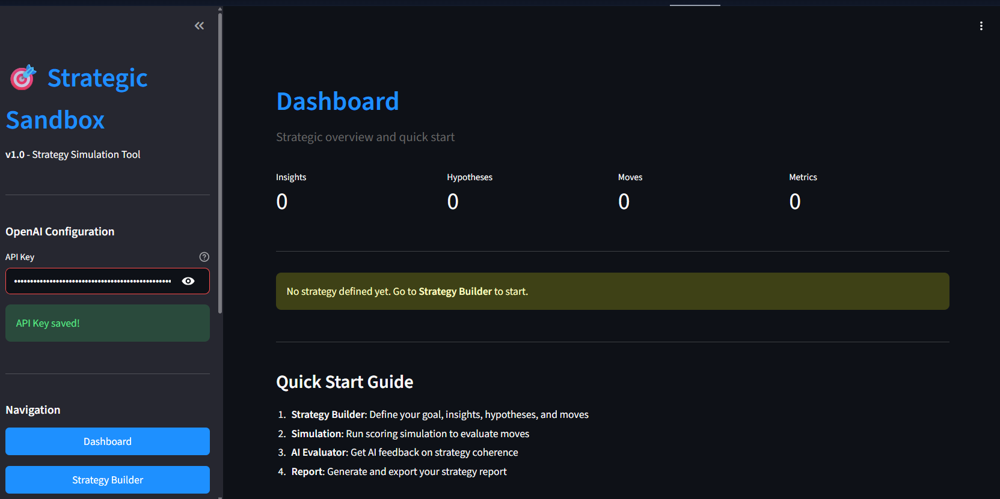
Jak to działa?
Aplikacja działa w ten sposób, że na początku mogę tu zanotować główny cel wpisując minimalny zestaw danych. Pierwszym krokiem jest tu zatem przełożenie strategii na zestaw logicznych elementów:
Goal → Arena → Insights → Hypotheses → Moves → MetricsPowiedzmy (przykład fikcyjny), że chcemy stworzyć strategię wprowadzenia na rynek nowej marki wody mineralnej w segmencie premium. Celem głównym mógłby więc być np.:
Osiągnąć 3% udziału w rynku wód premium w ciągu 18 miesięcy od launchuBaseline to w tym przypadku 0 ponieważ marka nie istnieje, dopiero wchodzi na rynek.
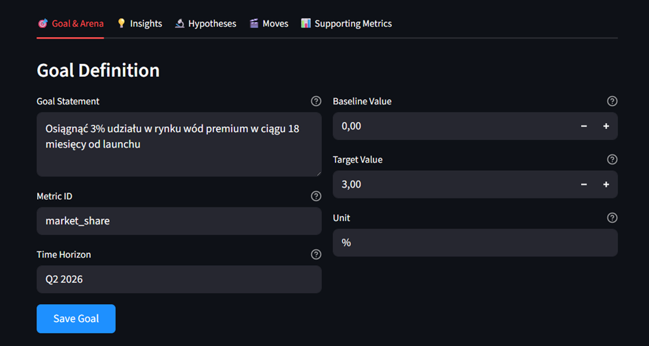
Kontekst rynkowy mógłby wówczas zostać opisany na zasadzie:
konkurencja Evian, Vittel, Żywiec Zdrój Premium, Cisowianka Perlage
segment nasycony w komunikacji o charakterze aspiracyjnym, ale mało różnicującej
rosnąca wrażliwość ekologiczna konsumentów i oraz wzrost znaczenia autentyczności
zmiana sposobu odkrywania marek — TikTok i Instagram jako kanały dla grupy 18–35 lat.
Kluczowe wyzwanie:
W jaki sposób zbudować markę premium, która jednocześnie będzie wiarygodna ekologicznie, nowoczesna wizualnie i angażująca emocjonalnie?
Notatki związane z kontekstem wprowadzam w polach „Arena Definition”, podobnie jak opis grupy docelowej:
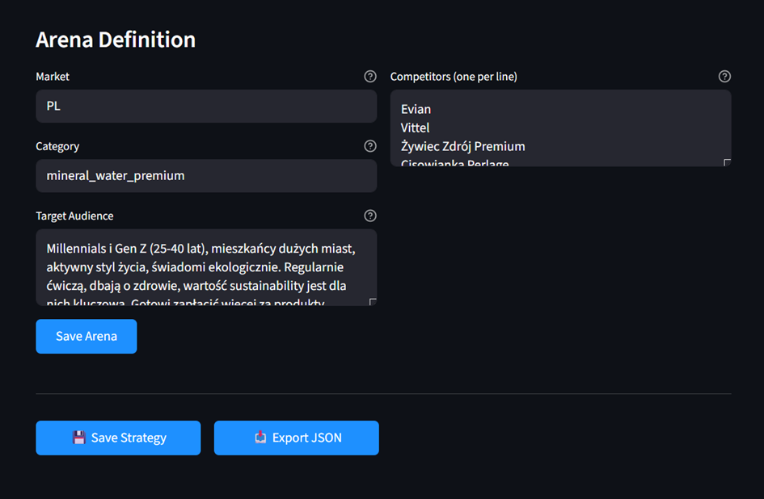
Arena jest tu więc podstawową mapą otoczenia marki — dzięki niej model będzie miał informacje, w jakim kontekście osadzić dane insighty i hipotezy.
Teraz mogę przejść do pola „Insights”, gdzie zanotowane będą wszystkie „wglądy” wraz z podaniem ich źródeł (evidence) na zasadzie. Każdy insight jako osobna „karteczka” ma tu również własny, unikalny identyfikator na zasadzie:
i1: Woda premium = poczucie troski o siebie, a nie luksus”; Badania jakościowe 2024i2: Większość (78%) młodych konsumentów w segmencie premium aktywnie poszukuje informacji o pochodzeniu produktu i wpływie na środowisko; Consumer_Survey_2024, Focus_Groups_Q1_2025i3: Woda mineralna jest elementem budowania tożsamości lifestyle - 64% pije określoną markę 'bo pasuje do ich stylu życia', nie tylko dla smaku; Ethnographic_Study_2024, Social_Listening_AnalysisItd. itp.
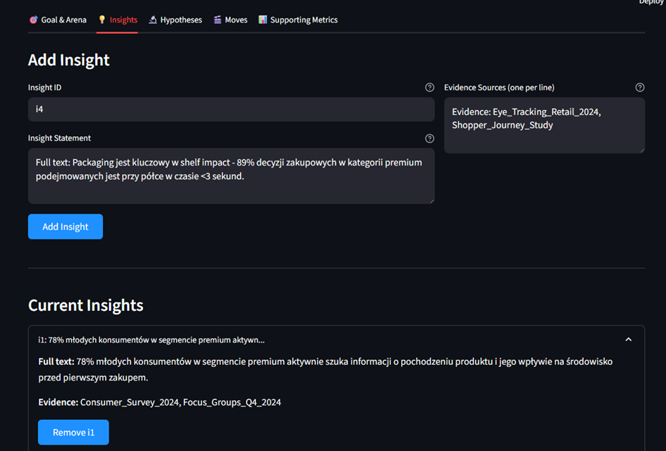
Kolejnym krokiem może być zanotowanie różnych hipotez. Hipotezy to w tym przypadku główne paliwo procesu - powinny być falsyfikowalne i powiązane z konkretnymi metrykami.
Każda hipoteza także ma tu własny ID - indeks, który później pozwoli zmapować i zwizualizować zależności – np. powiązania pomiędzy insightami i hipotezami. Hipotezy mogą mieć postać sformułowań w rodzaju:
h1: Transparentna komunikacja o źródle pochodzenia i procesie produkcji może się przyczynić do zwiększenia „brand trust” w pierwszym okresie kampanii.Metric: brand_trust | Expected change: 0.25h2: Minimalistyczny design butelki z elementami nature-inspired może zwiększyć trial = w kanałach modern trade.Based on: i2, i3Metric: trial_rate | Expected change: 0.3h3: Kampania na TikTok/IG z influencerami fitness wygeneruje zasięg i trialMetric: digital_reach | Expected change: 0.5Itd.
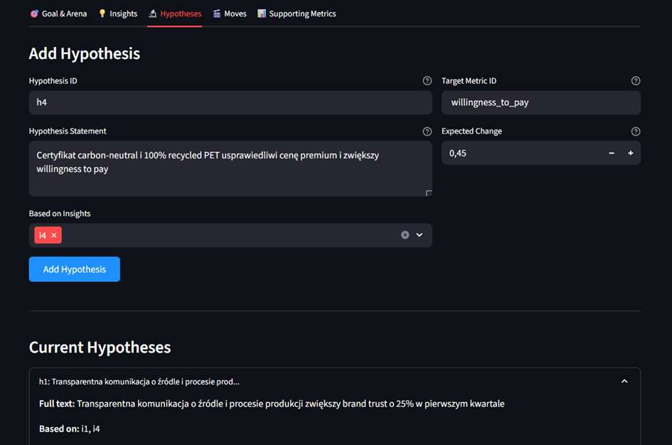
Kolejnym krokiem jest zanotowanie pomysłów na konkretne działania strategiczne – „Moves”. Mogą one mieć formę krótkich opisów na zasadzie:
m1: Kampania samplingowa w wybranych siłowniach i studiach jogi (10 największych miast)Przy okazji każdy "ruch strategiczny” mogę tu wstępnie ocenić cząstkowo do czego służą suwaki trzech parametrów:
Impact – jako potencjalna siła wpływu danego ruchu na realizację głównego celu (np. wzrost świadomości, sprzedaży, konwersji itp). Zakres to 0 do 1, gdzie 1.0 = wpływ maksymalny.
Fit - dopasowanie strategiczne, czyli na ile dany ruch pasuje moim zdaniem do tożsamości marki, insightu i kontekstu rynkowego. Zakres to 0 do 1, gdzie 1.0 = pełne dopasowanie.
Risk – jest to ewentualne ryzyko niepowodzenia, czyli jak duże może być prawdopodobieństwo, że dane działanie nie przyniesie oczekiwanych rezultatów. Zakres to 0 do 1, gdzie 1.0 = bardzo wysokie ryzyko.
Na tej podstawie szacowana będzie póżniej ocena każdego ruchu – jego względna atrakcyjność zgodnie z ogólna formułą:
Score = (impact × fit) × (1 − risk) / costCzyli (impact × fit) pokazuje na ile „mocny” i spójny jest dany ruch. Współczynnik (1 − risk) redukuje wynik o potencjalne ryzyko – np. jeśli ryzyko = 0.3, to skuteczność mnożymy przez 0.7). Podzielenie wszystkiego przez zakładane koszty ruchu (cost) ustawia finalny wynik względem ponoszonych nakładów (czyli pokazuje efektywność „na złotówkę”).
Jest to oczywiście bardzo ogólna formuła, ale nie wymaga ona twardych danych a jenocześnie pozwala porównywać pomiędzy sobą bardzo różne działania odtwarzając pewien intuicyjny proces decyzyjny w ustrukturyzowanej postaci. W praktyce, w późniejszej symulacji w sandboxie, wszystkie wyniki ruchów powiązanych z daną hipotezą zostaną zsumowane i akorygują prognozowany efekt na metrykę (forecast).
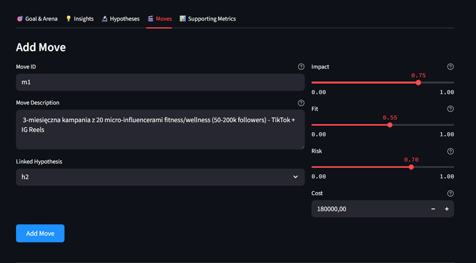
Narzędzie posiada także pole pozwalające wproadzić metryki wspierające – cząstkowe cele, które mogą być realizowane przez poszczególne działania. Jest to zgodne z założeniem, że każda strategia ma tu swoją główną metrykę celu (np. brand_awareness_% czy conversion_rate_%), ale rzeczywiste procesy rynkowe są dosyć złożone i wzrost jednej zmiennej wynika często np. z niewielkich zmian w innych. Można je również traktować jako wczesne sygnały postępu - pokazują one czy strategia zmierza w dobrym kierunku.
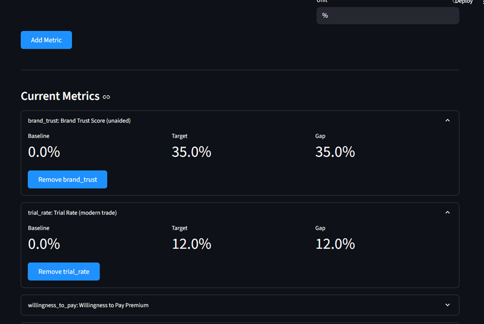
Kiedy wszystkie notatki zostaną już wprowadzone w „Strtegy Builder", możemy uruchomić symulacje rynkowych wydarzeń. Pierwsza rzecz, którą tu otrzymamy to ranking posunięć strategicznych (Moves):
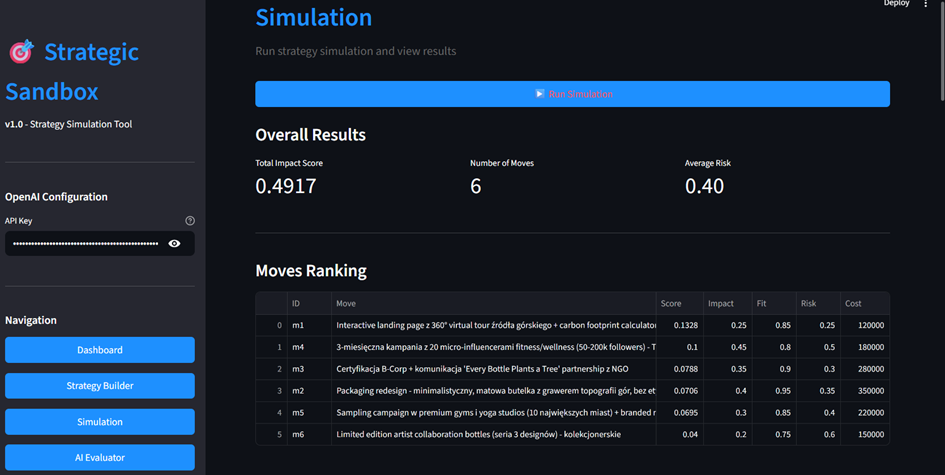
Każde działanie (Move) zostanie teraz przeliczone według swojej siły, dopasowania, ryzyka i kosztu. Aplikacja wygeneruje w tens sposób kluczowe wskaźniki zbiorcze:
Total Impact Score - łączny efekt całej strategii (suma score’ów wszystkich ruchów),
Average Risk – średni poziom ryzyka w całym portfelu działań.
Niżej pojawi się szczegółowy ranking poszczególnych ruchów strategicznych uszeregowanych według ich efektywności względnej. jest to więc coś w rodzaju „mapy siły strategii”, pokazującej, które działania mogą być najbardziej obiecujące, a które wymagją rewizji.
Zobaczymy też wykres reprezentujący ruchy oraz przedstawiuoną graficznie zależność impact–fit–risk–cost. W poniższym przykładzie widzimy, że najwyższy wynik osiągnął m1 (zdefinowany wcześniej jako „Interactive landing page 360°”), co mogłoby sugerować, że może to być najbardziej efektywne działanie w relacji: koszt – ryzyko – siła wpływu.
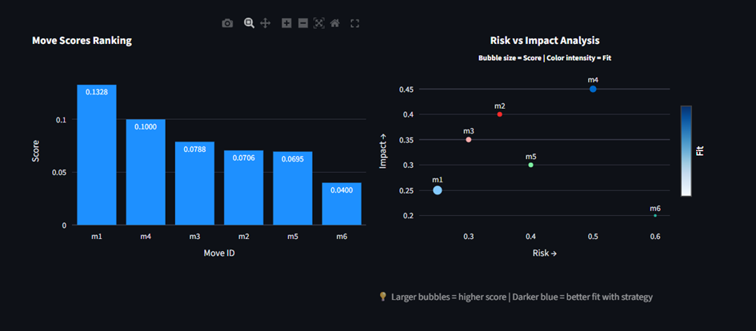
Jeszcze niże zobaczymy też Metric Forecasts, czyli miejsca, w którym sandbox zilustruje jak poszczególne działania przekładają się na konkretne metryki.
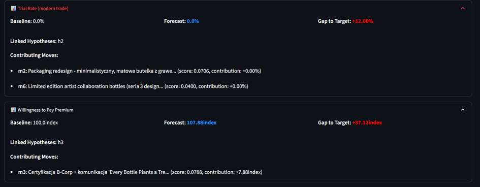
Przewijając zaś okno do dołu zobaczymy również wizualizację logiki strategii (Strategy Logic Flow) czyli graficzną mapę zależności pokazującą, w jaki sposób insighty łaczą się z hipotezami czy też jakie ruchy mają impact na konkretne metryki.
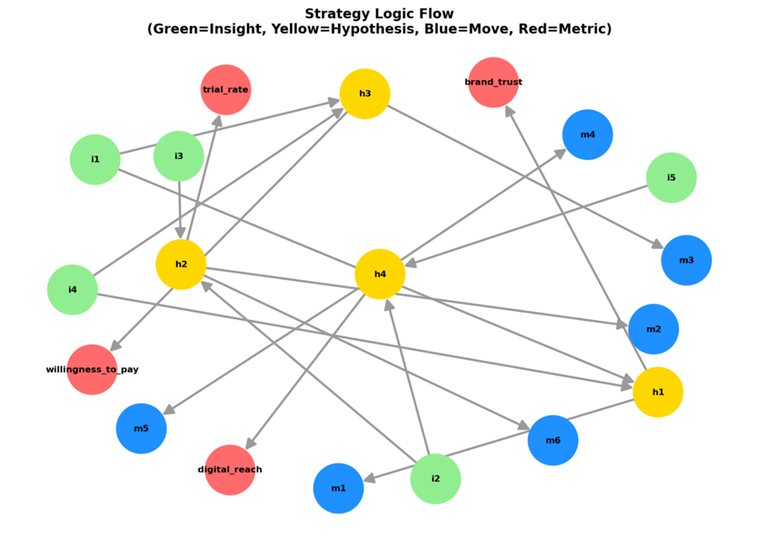
Mapa taka pozwala zobaczyć całość strategii jako pewien logiczny system dzięki czemu łatwiej np. zidentyfikować brakujące ogniwa (np. hipotezy oderwane od insightów) oraz umożliwia analizę przepływu wpływu (impact flow) obrazując które elementy są tu „centralne|, a które bardziej „peryferyjne”.
Zwieńczeniem całego procesu może być uruchomienie modułu „AI Evaluator”: Modułu ten dokona pełnego audytu strategii. Sandbox zamienia się w tym przypadku z narzędzia analitycznego w krytycznego partnera oceniając spójność modelu, wskazując luki, „czerwone flagi” czy też błędne założenia oraz sugerując propozycje zmian.
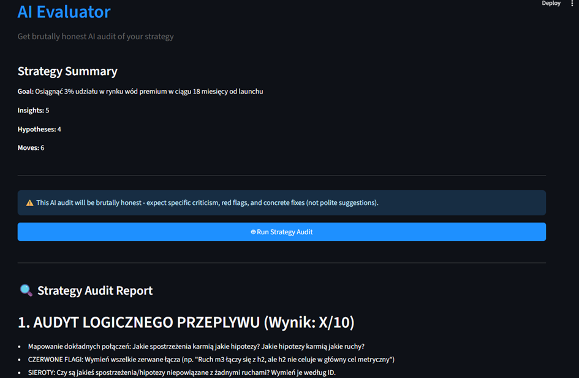
Evaluator otrzymuje niezbędne dane w momencie uruchomienia. Cała strategia (w formacie JSON) trafia tu z modułu Strategy Builder zawiera zatem: goals, insights, hypotheses, moves, metrics oraz pełną macierz powiązań. Strategia ta zostaje wklejona do szablonu promptu dla LLM-a („You are a ruthlessly honest strategy auditor…” i aplikacja wysyła żądanie do API OpenAI9model GPT-4) a wynikiem jest wygenerowany raport finalny.
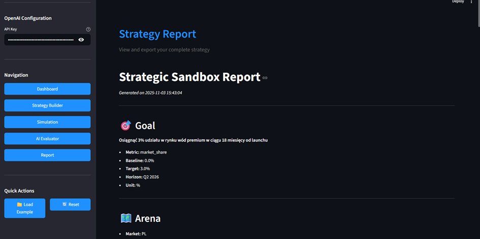
Całe to narzędzie pracuje zatem jako pewne eksperymentalne środowisko myślowe - coś pomiędzy notatnikiem, symulatorem i sparing-partnerem intelektualnym. Nie zastępuje na pewno procesu strategicznego ale pomaga go porządkować, wizualizować dane i przyspieszać wybrane kroki.
Pozwala też szybko przetestować różne hipotezy, ocenić ich potencjalny wpływ i ryzyko, a następnie, przy wsparciu AI spojrzeć na całość z dystansu, którego w codziennej pracy czasem po prostu brakuje.
Nie chodzi tu więc o to aby AI pisała samodzielnie strategie, ale o to aby pomagała myśleć sprawniej - lepiej, szybciej i nieco szerzej z większą świadomością zależności i różnych konsekwencji podejmowanych decyzji. I o to aby zapewniała swoisty system symulacyjny, który można uruchamiać, testować i optymalizować w czasie rzeczywistym.
P.S.
Zapraszam do testowania Strategic Sandbox a także zgłaszanie wszelkich uwag, pomysłów i opinii, które pozwolą udoskonalić to narzędzie.
Jeśli chcesz zobaczyć przykład, jak uzupełniać konkretne pola, to w lewym dolnym rogu aplikacji możesz załadować opisany case (Load Example)
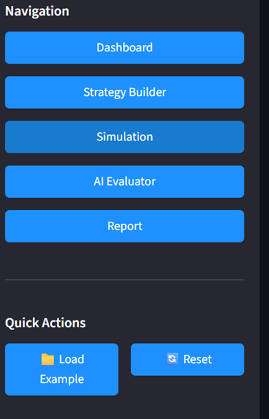
Klucz API niezbędny do uruchomienia aplikacji wygenerować można tutaj: